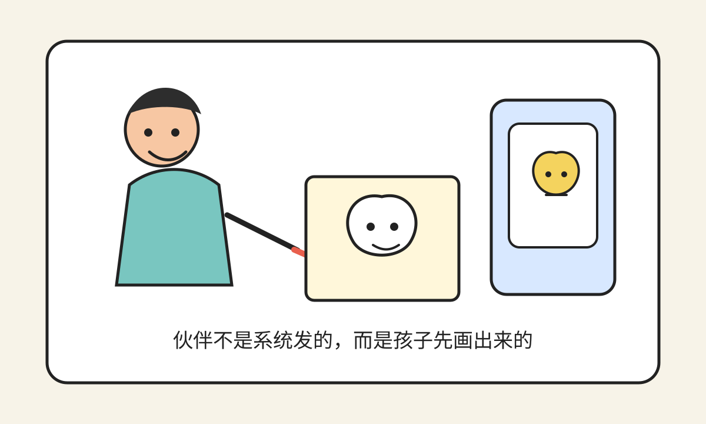
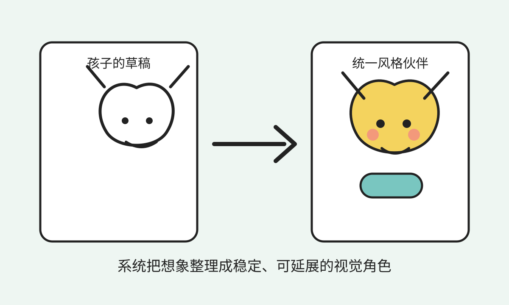
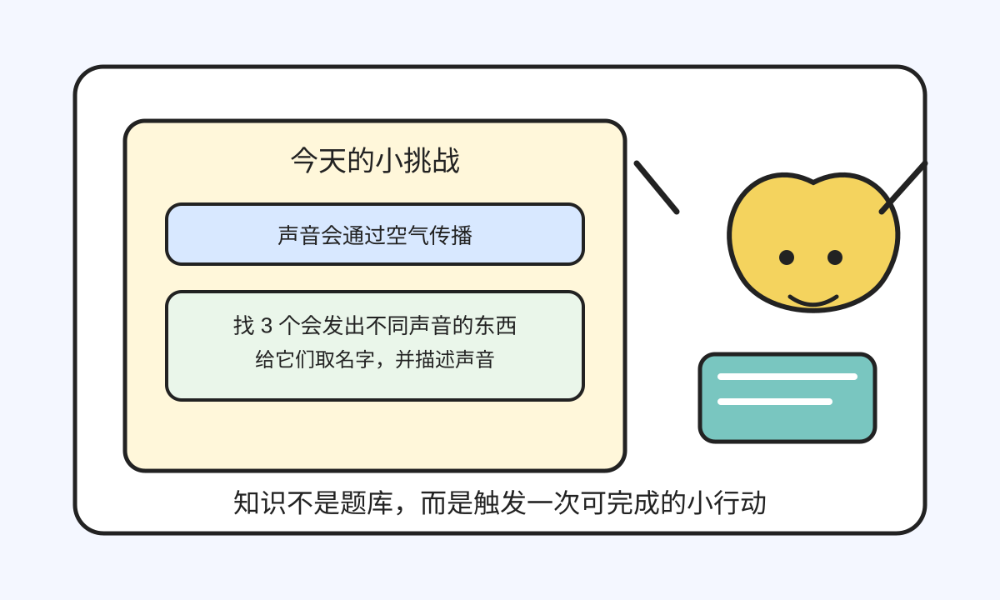
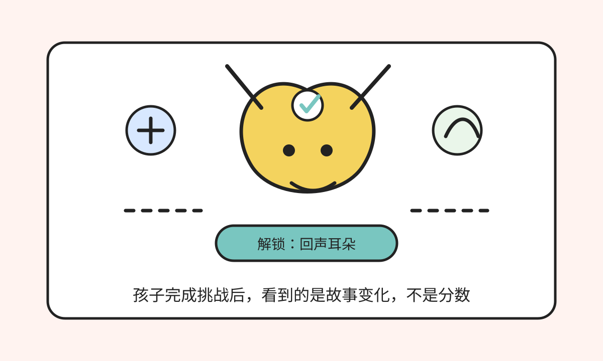

小小冒险伙伴
一个儿童 AI 伙伴 Demo：孩子画出自己的伙伴，通过知识挑战和互动，让伙伴产生故事变化。

一、现在教育的痛点是什么？
AI 正在让知识获取变得越来越便宜。过去教育很大一部分价值来自“老师讲知识、学生记知识、考试验证知识”。但未来，孩子想知道一个概念、公式、历史事件或科学现象，AI 都可以很快解释。
真正的问题会变成：孩子有没有好奇心？会不会主动提问？能不能把知识用到真实生活里？能不能持续行动、创造作品、和别人合作？
知识会变便宜，但成长不会。
旧问题
重知识输入，轻真实体验。
旧问题
重标准答案，轻主动提问。
旧问题
重分数排名，轻人格成长。
旧问题
重外部评价，轻自我理解。
二、未来教育可能是什么样？
未来教育不应该只是网课、题库、学习机、标准课程表，或用 AI 包装的应试系统。
它更像一个孩子长期拥有的成长伙伴系统。它会陪孩子发现问题、学一点需要的知识、做一个小挑战、记录自己的发现，慢慢看见自己在变化。
更重要的能力包括：好奇心、经验、生命力、专注力、想象力和合作能力。
三、这个产品是什么？
它不是网课，不是题库，也不是普通 AI 聊天。它是一个儿童 AI 伙伴产品的早期原型。
- 孩子画一个伙伴。
- 系统生成统一风格的 2D 卡通形象。
- 孩子和伙伴互动。
- 系统给出一个知识小挑战。
- 孩子完成后，伙伴获得变化。
- 系统把经历记录成一页回忆故事。

四、核心体验
知识小挑战
知识不是题库，而是伙伴获得技能、故事变化和小挑战的入口。

伙伴变化
孩子看到的不是分数，而是伙伴多了一个表情、道具、技能或故事片段。

回忆故事本
成长不是一串数字，而是一页页孩子和伙伴共同经历过的故事。

五、第一版只做什么？
第一版只做 5 个页面：
创建伙伴
伙伴主页
知识小挑战
互动聊天
回忆故事本
第一版只做 6 个系统：形象设计、知识系统、成长系统、游戏系统、记忆系统、硬件桥接系统。
六、第一版明确不做什么？
- 不做原生 App。
- 不做真实 3D 自动生成。
- 不做复杂骨骼绑定。
- 不做完整语音包。
- 不做实体硬件。
- 不做账号、支付和家长后台。
- 不做真实儿童数据采集。
- 不承诺替代学校。
七、我现在需要哪些协作者？
- 产品/UX：画清 5 个页面流程。
- 插画/视觉：定义伙伴统一美术风格。
- AI 绘图提示词：把孩子草稿变成统一风格伙伴。
- 前端：做一个能本地运行的 Web Demo。
- 教育内容：设计第一批知识小挑战。
- 游戏策划：设计伙伴技能和故事反馈。
- Prompt/模型桥接：连接豆包、DeepSeek 等外部 AI。
- 法律/IP：保护项目概念、命名、文档、角色设定、美术风格、提示词、代码和协作成果。
这是一个早期原型。我现在需要的不是宏大的口号，而是能把最小闭环一起做出来的人。